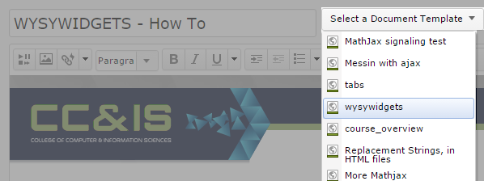
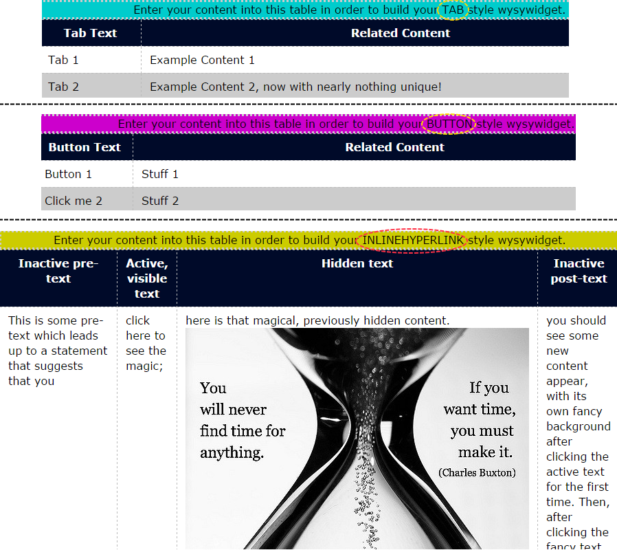

WYSYWIDGETS provide interactive content to students and can be edited by using the WYSIWYG editor. Tabbed content, tooltips, inline-display hyperlinks, and knowledge checks are all types of WYSYWIDGETS that are available to you to use.
(If you would like a new type of WYSYWIDGET, please contact your Course Maintainer with your request.)
The first step is to create a new file and then Select a Document Template titled "WYSYWIDGETS." Your new file will now contain some example WYSYWIDGET content. You will notice that the example content is contained within a set of tables when you are in editing mode and that the example content shows up as a set of interactive tools for students when you are not editing.

In order to change the content of a WYSYWIDGET, just change the content found in the related WYSYWIDGET tables that are visible only from the editing interface. Each type of WYSYWIDGET table has a distinct background color for its table's caption and each caption describes the WYSYWIDGET type. Also, the header elements in the top row of each WYSYWIDGET table describe the purpose of each column in each table. For instance, you will see a header element that says "Button Text" for the Button WYSYWIDGET table.

Blank rows in a WYSYWIDGET table are ignored only if all elements in that row are blank. Partially blank rows in WYSYWIDGET tables may cause problems or may just look funny or be partially functional when seen by the student.
Adding new rows to WYSYWIDGET tables can be done from your keyboard by pressing the 'tab' key or can be done using the WYSIWYG toolbar's table interface ("insert row," "after" or "before"). It is rather difficult to delete a table row without the use of the WYSIWYG toolbar so I would suggest just using the toolbar. If you must, row deletion can be done by highlighing all text in a row and partially highlighting the end of the previous row before pressing 'backspace' or 'delete.'
If you want to have several WYSYWIDGETS of the same type on a single page, make a copy of the related WYSYWIDGET table and paste that copy elsewhere in the editable page. Then, just update the content rows of the newly copied table and you will see your new WYSYWIDGET appear for students after saving your changes.
Anything that can be placed into a normal page can be placed inside a WYSYWIDGET. Be careful though, if you paste to much fancy content into WYSYWIDGETS, your page will load as slowly as it would had all that fancy content been pasted elsewhere in the page. This may change soon, but, for now, please don't overwhelm a page with content.